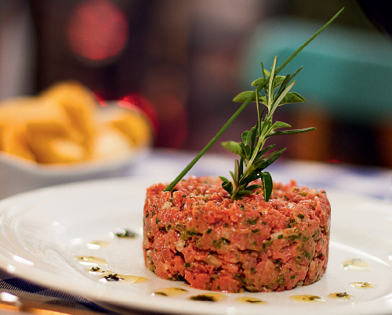

Bem vindo ao café fortenebleau
Conteudo Principal do site:
Images:
Tudo relacionado a culinária Francesa e a arte de se cozinhar!
Um Pouco sobre os chefs:
Francesco:Nascido na França no ano 1956,
possui um charme especial na sua comida que é
movida a bons tempeiros e um amor por sua culinária.